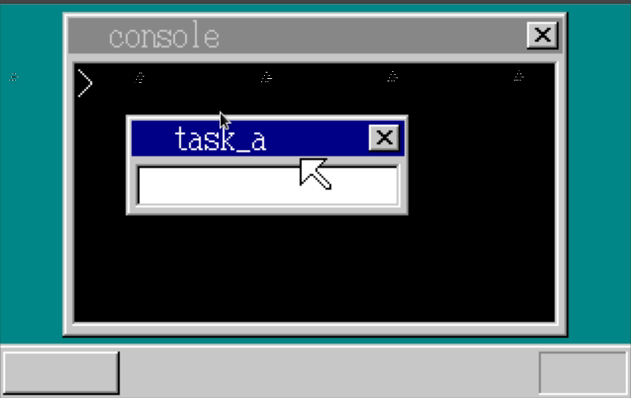

「30日でできる！OS自作入門」をRustで。24日目
「30日でできる！OS自作入門 」のC言語の部分をできるだけRustですすめてみる。今回は24日目の内容。
ウィンドウの切り替え
ウィンドウが増えてきたので、切り替えたときに重ねあわせも切り替えられるようにする。
F11で切り替え
まずは、F11でコンソールとtask_aを切り替えられるようにする。
// lib.rs
#[no_mangle]
#[start]
pub extern "C" fn hrmain() {
// 省略
// F11 で 1 の位置にあるSheetを下げる
if key == 0x57 && sheet_manager.z_max.is_some() && sheet_manager.z_max.unwrap() > 2 {
let z = sheet_manager.z_max.unwrap();
let sheet_index = sheet_manager.sheets[1];
sheet_manager.updown(sheet_index, Some(z - 1));
}
// 省略
}GIFだと少し動きが見にくいが、以下のように切り替えができるようになる。

マウスクリックでの切り替え
次にマウスクリックで切り替えができるようにする。
これまでtask_aウィンドウを移動するロジックを書いていたところを書きかえる。
これにより一時的にtask_aウィンドウは動かなくなる。
// lib.rs
#[no_mangle]
#[start]
pub extern "C" fn hrmain() {
// 省略
} else if 512 <= i && i <= 767 {
if mouse_dec.decode((i - 512) as u8).is_some() {
let (new_x, new_y) = sheet_manager.get_new_point(
shi_mouse,
mouse_dec.x.get(),
mouse_dec.y.get(),
);
sheet_manager.slide(shi_mouse, new_x, new_y);
// 左クリックをおしていた場合
if (mouse_dec.btn.get() & 0x01) != 0 {
// Sheetの順番を入れ替え
if let Some(z) = sheet_manager.z_max {
let mut h = z - 1; // マウスの分1ひいておく
while h > 0 {
let sheet_index = sheet_manager.sheets[h];
let sheet = sheet_manager.sheets_data[sheet_index];
let x = new_x - sheet.x;
let y = new_y - sheet.y;
if 0 <= x && x < sheet.width && 0 <= y && y < sheet.height {
let color = unsafe {
*((sheet.buf_addr
+ y as usize * sheet.width as usize
+ x as usize)
as *const i8)
};
if to_color(color) != sheet.transparent {
sheet_manager.updown(sheet_index, Some(z - 1));
break;
}
}
h -= 1;
}
// sheet_manager.slide(shi_win, new_x - 80, new_y - 8);
}
}
}
} else {
// 省略
}これでマウスクリックで切り替えられるようになった。見た目は上と変らないので省略する。
ウィンドウの移動
上記で一時的にウィンドウの移動ができなくなったので、できるようにする。
// lib.rs
#[no_mangle]
#[start]
pub extern "C" fn hrmain() {
// 省略
// ウィンドウの移動
let mut moving = false;
let mut mouse_move_x = 0;
let mut mouse_move_y = 0;
let mut target_sheet_index = 0;
loop {
// 省略
// 左クリックをおしていた場合
if (mouse_dec.btn.get() & 0x01) != 0 {
if moving {
let x = new_x - mouse_move_x;
let y = new_y - mouse_move_y;
let sheet = sheet_manager.sheets_data[target_sheet_index];
sheet_manager.slide(target_sheet_index, x + sheet.x, y + sheet.y);
mouse_move_x = new_x;
mouse_move_y = new_y;
} else {
// Sheetの順番を入れ替え
if let Some(z) = sheet_manager.z_max {
let mut h = z - 1;
while h > 0 {
target_sheet_index = sheet_manager.sheets[h];
let sheet = sheet_manager.sheets_data[target_sheet_index];
let x = new_x - sheet.x;
let y = new_y - sheet.y;
if 0 <= x && x < sheet.width && 0 <= y && y < sheet.height {
let color = unsafe {
*((sheet.buf_addr
+ y as usize * sheet.width as usize
+ x as usize)
as *const i8)
};
if to_color(color) != sheet.transparent {
sheet_manager.updown(target_sheet_index, Some(z - 1));
if 3 <= x && x < sheet.width - 3 && 3 <= y && y < 21 {
// ウィンドウ移動モードへ
moving = true;
mouse_move_x = new_x;
mouse_move_y = new_y
}
break;
}
}
h -= 1;
}
}
}
} else {
// 左クリックを押してなかったらウィンドウ移動モードからもどす
moving = false;
}moving でウィンドウ移動モードかどうかを切り替え、ウィンドウ移動モードならマウスの移動分移動するようにした。
実行結果
例によってマウスの動作がPeekだとうまくいかないのでGIFではなくスクリーンショットを貼る。
無事にウィンドウの切り替えと移動がマウス操作でできるようになった。
ウィンドウのクローズ
アプリケーションのウィンドウを「×」ボタンのクリックで閉じることができるようにする。
// lib.rs
#[no_mangle]
#[start]
pub extern "C" fn hrmain() {
// 省略
if 0 <= x && x < sheet.width && 0 <= y && y < sheet.height {
let color = unsafe {
*((sheet.buf_addr
+ y as usize * sheet.width as usize
+ x as usize)
as *const i8)
};
if to_color(color) != sheet.transparent {
sheet_manager.updown(target_sheet_index, Some(z - 1));
if 3 <= x && x < sheet.width - 3 && 3 <= y && y < 21 {
// ウィンドウ移動モードへ
moving = true;
mouse_move_x = new_x;
mouse_move_y = new_y
}
// ここから追加
if sheet.width - 21 <= x
&& x < sheet.width - 5
&& 5 <= y
&& y < 19
{
// ×ボタンクリック
if sheet.task_index != 0 {
let console_addr =
unsafe { *(CONSOLE_ADDR as *const usize) };
let console = unsafe {
&mut *(console_addr as *mut Console)
};
let message = b"\nBreak(mouse) :\n";
console.put_string(
message.as_ptr() as usize,
message.len(),
8,
);
let mut console_task_mut = &mut task_manager
.tasks_data[console_task_index];
cli();
console_task_mut.tss.eax =
unsafe { &console_task_mut.tss.esp0 }
as *const i32
as i32;
console_task_mut.tss.eip = end_app as i32;
sti();
}
}
break;
}
}
// 省略
}実行結果
以下の通り、×ボタンクリックでアプリケーションのウィンドウを閉じることができるようになった。
入力ウィンドウをアプリのウィンドウも含めて切り替え
入力ウィンドウ(ウィンドウの上部が青くなり、カーソル表示があるものではカーソルが点滅する)をアプリケーションで起動したウィンドウも含めて切り替えられるようにする。
まず、Sheetにフラグを追加する。
// sheet.rs
#[derive(Debug, Clone, Copy, PartialEq, Eq)]
pub struct Sheet {
pub buf_addr: usize,
pub width: i32,
pub height: i32,
pub x: i32,
pub y: i32,
pub transparent: Option<Color>,
pub z: Option<usize>,
pub flag: SheetFlag,
pub cursor: bool, // <- カーソルがONかどうか
pub from_app: bool, // <- アプリケーションから起動したウィンドウかどうか
pub task_index: usize,
}
impl Sheet {
pub fn new() -> Sheet {
Sheet {
buf_addr: 0,
width: 0,
height: 0,
x: 0,
y: 0,
transparent: None,
z: None,
flag: SheetFlag::AVAILABLE,
cursor: false, // <- 追加
from_app: false, // <- 追加j
task_index: 0,
}
}
}これを使ってlib.rsに処理を追加する。
// lib.rs
#[no_mangle]
#[start]
pub extern "C" fn hrmain() {
// 省略
let mut active_window: usize = shi_win;
{
let mut sheet_console = &mut sheet_manager.sheets_data[shi_console];
sheet_console.task_index = console_task_index;
sheet_console.cursor = true;
}
{
let mut sheet_win = &mut sheet_manager.sheets_data[shi_win];
sheet_win.cursor = true;
}
// 省略
loop {
// 省略
if fifo.status() != 0 {
// 省略
let i = fifo.get().unwrap();
sti();
let active_sheet = sheet_manager.sheets_data[active_window];
if active_sheet.flag == SheetFlag::AVAILABLE {
// ウィンドウが閉じられたら一番上のウィンドウを入力ウィンドウにする
if let Some(zmax) = sheet_manager.z_max {
active_window = sheet_manager.sheets[zmax - 1];
cursor_c = window_on(
sheet_manager,
task_manager,
active_window,
shi_win,
cursor_c,
);
}
}
// 省略
// Enterキー
if key == 0x1c {
if active_window != shi_win { // active_windowをshi_winと比較するように変更
let ctask = task_manager.tasks_data[console_task_index];
let fifo = unsafe { &*(ctask.fifo_addr as *const Fifo) };
fifo.put(CONSOLE_ENTER + KEYBOARD_OFFSET).unwrap();
}
}
// 省略
// タブ
if key == 0x0f {
let sheet_win = sheet_manager.sheets_data[shi_win];
let sheet_console = sheet_manager.sheets_data[shi_console];
// 現在入力中のものをOFFにして、ひとつ下のものを入力中にする
cursor_c = window_off(
sheet_manager,
task_manager,
active_window,
shi_win,
cursor_c,
cursor_x as i32,
);
let mut j = active_sheet.z.unwrap() - 1;
if j == 0 && sheet_manager.z_max.is_some() && sheet_manager.z_max.unwrap() > 0 {
j = sheet_manager.z_max.unwrap() - 1;
}
active_window = sheet_manager.sheets[j];
cursor_c = window_on(
sheet_manager,
task_manager,
active_window,
shi_win,
cursor_c,
);
}window_off, window_on は、window.rsというファイルを作り、そちらに追加した。
// window.rs
pub fn window_on(
sheet_manager: &mut SheetManager,
task_manager: &TaskManager,
sheet_index: usize,
shi_win: usize,
cursor_c: Color,
) -> Color {
let sheet = sheet_manager.sheets_data[sheet_index];
let mut cursor_c = cursor_c;
toggle_title_color(sheet.buf_addr, sheet.width as usize, true);
sheet_manager.refresh(sheet_index, 3, 3, sheet.width, 21);
if sheet_index == shi_win {
cursor_c = Color::Black;
{
let mut sheet_win = &mut sheet_manager.sheets_data[sheet_index];
sheet_win.cursor = true;
}
} else {
if sheet.cursor {
let task = task_manager.tasks_data[sheet.task_index];
let fifo = unsafe { &mut *(task.fifo_addr as *mut Fifo) };
fifo.put(CONSOLE_CURSOR_ON).unwrap();
}
}
cursor_c
}
pub fn window_off(
sheet_manager: &mut SheetManager,
task_manager: &TaskManager,
sheet_index: usize,
shi_win: usize,
cursor_c: Color,
cursor_x: i32,
) -> Color {
let sheet_win = sheet_manager.sheets_data[sheet_index];
let sheet = sheet_manager.sheets_data[sheet_index];
let mut cursor_c = cursor_c;
toggle_title_color(sheet.buf_addr, sheet.width as usize, false);
sheet_manager.refresh(sheet_index, 3, 3, sheet.width, 21);
if sheet_index == shi_win {
cursor_c = Color::White;
{
let mut sheet_win = &mut sheet_manager.sheets_data[sheet_index];
sheet_win.cursor = false;
}
boxfill(
sheet_win.buf_addr,
sheet_win.width as isize,
Color::White,
cursor_x as isize,
28,
cursor_x as isize + 7,
43,
);
} else {
if sheet.cursor {
let task = task_manager.tasks_data[sheet.task_index];
let fifo = unsafe { &mut *(task.fifo_addr as *mut Fifo) };
fifo.put(CONSOLE_CURSOR_OFF).unwrap();
}
}
cursor_c
}またウィンドウを強制クローズするときに、アプリから起動したウィンドウかどうかを確認するようにした。
// console.rs
#[no_mangle]
pub extern "C" fn hrb_api(/* 省略 */) {
// 省略
} else if edx == 5 {
// 省略
new_sheet.from_app = true;
// 省略
}
}
}
impl Console {
pub fn cmd_app<'a>(&mut self, filename: &'a [u8], fat: &[u32; MAX_FAT]) {
// 省略
{
let sheet_manager = unsafe { &mut *(self.sheet_manager_addr as *mut SheetManager) };
for i in 0..MAX_SHEETS {
let sheet = sheet_manager.sheets_data[i];
if sheet.task_index == task_index
&& sheet.flag != SheetFlag::AVAILABLE
&& sheet.from_app // <- ここだけ追加
{
sheet_manager.free(i);
}
}
}
// 省略
}
}実行結果
以下の通り、タブでの入力ウィンドウの切り替えがアプリケーションウィンドウ含めてできるようになった。

マウスでの入力切り替え
次に、先ほどの入力切り替えをマウスでもできるようにする
// lib.rs
#[no_mangle]
#[start]
pub extern "C" fn hrmain() {
// 省略
if to_color(color) != sheet.transparent {
sheet_manager.updown(target_sheet_index, Some(z - 1));
// ここから追加
if active_window != target_sheet_index {
cursor_c = window_off(sheet_manager, task_manager, active_window, shi_win, cursor_c, cursor_x as i32);
active_window = target_sheet_index;
cursor_c = window_on(sheet_manager, task_manager, active_window, shi_win, cursor_c);
}
// 省略
}
}マウスクリックでウィンドウを入れ替えていたところに少し追加するだけでできる。
実行結果
以下の通り、マウスクリックでウィンドウの切り替えができるようになった。

タイマーの実装
OSのタイマを使ってタイマー機能を実装する。
まず、タイマまわりのシステムコールを作る。
// console.rs
#[no_mangle]
pub extern "C" fn hrb_api(/* 省略 */) {
// 省略
} else if edx == 16 {
let reg_eax = unsafe { &mut *((reg + 7 * 4) as *mut usize) };
{
let mut timer_manager = TIMER_MANAGER.lock();
let timer_index = timer_manager.alloc().unwrap();
let mut timer = &mut timer_manager.timers_data[timer_index];
timer.from_app = true;
*reg_eax = timer_index;
}
} else if edx == 17 {
let task_manager = unsafe { &mut *(TASK_MANAGER_ADDR as *mut TaskManager) };
let task_index = task_manager.now_index();
let task = &task_manager.tasks_data[task_index];
TIMER_MANAGER
.lock()
.init_timer(ebx as usize, task.fifo_addr, eax + 256);
} else if edx == 18 {
TIMER_MANAGER.lock().set_time(ebx as usize, eax as u32);
} else if edx == 19 {
TIMER_MANAGER.lock().free(ebx as usize);
}
0
}timerの関数をそのままラップしたようなシステムコールになっている。
これを使って、アプリケーションを実装する。
今後アプリケーションがどんどん増えていきそうなので、appsというディレクトリを作り、そちらにコピーしていく方式に変更した。
今回はapps/timer/src/lib.rsがメインのRustファイルになる。
// apps/timer/src/lib.rs
use core::fmt;
use core::panic::PanicInfo;
extern "C" {
fn _api_initmalloc();
fn _api_malloc(size: usize) -> usize;
fn _api_free(addr: usize, size: usize);
fn _api_linewin(sheet_index: usize, x0: i32, y0: i32, x1: i32, y1: i32, color: i32);
fn _api_inittimer(timer_index: usize, data: i32);
fn _api_settimer(timer_index: usize, timer: i32);
fn _api_boxfilwin(sheet_index: usize, x0: i32, y0: i32, x1: i32, y1: i32, color: i32);
fn _api_putstrwin(
sheet_index: usize,
x: i32,
y: i32,
color: i32,
len: usize,
string_addr: usize,
);
}
const SHEET_UNREFRESH_OFFSET: usize = 256;
struct TimerMessage {
pub message: [u8; 12],
pub ptr: usize,
}
#[no_mangle]
#[start]
pub extern "C" fn hrmain() {
use core::fmt::Write;
unsafe {
_api_initmalloc();
}
let buf_addr = unsafe { _api_malloc(150 * 50) };
let sheet_index = open_window(buf_addr, 150, 50, -1, b"timer".as_ptr() as usize) as usize;
let timer_index = alloc_timer();
unsafe {
_api_inittimer(timer_index.clone(), 128);
}
let mut h = 0;
let mut m = 0;
let mut s = 0;
let mut timer_message = &mut TimerMessage {
message: [0; 12],
ptr: 0,
};
loop {
write!(timer_message, "{:>5}:{:>02}:{:>02}", h, m, s).unwrap();
unsafe {
_api_boxfilwin(sheet_index, 28, 28, 115, 41, 7 /* 白 */);
_api_putstrwin(
sheet_index,
28,
27,
0, /* 黒 */
11,
timer_message.message.as_ptr() as usize,
);
_api_settimer(timer_index, 100);
}
if get_key(1) != 128 {
break;
}
s += 1;
if s == 60 {
s = 0;
m += 1;
if m == 60 {
m = 0;
h += 1;
}
}
timer_message.ptr = 0;
}
end()
}
impl fmt::Write for TimerMessage {
fn write_str(&mut self, s: &str) -> fmt::Result {
let str_bytes = s.as_bytes();
for i in 0..str_bytes.len() {
if self.ptr > 11 {
break;
}
self.message[self.ptr] = str_bytes[i];
self.ptr += 1;
}
Ok(())
}
}インラインアセンブリはハマリどころが多く、今回Cの部分をRustで書きたいだけなので、今後はアセンブリ言語でのコードはできるだけ本の内容をそのままasmfunc.asmに書いて参照するようにする。
また、write!を使用するためにstructを定義してfmt::Writeを実装した。
このままでも一応動くが、タイマの後処理(終了後のアプリケーションにひもづいているタイマはキャンセルする処理)の必要がある。
タイマ用のstructにfrom_appというアプリから起動したかどうかをもたせる。
// timer.rs
#[derive(Debug, Clone, Copy)]
pub struct Timer {
pub timeout: u32,
pub flag: TimerFlag,
pub from_app: bool,
pub data: i32,
pub fifo_addr: usize,
pub next: Option<usize>,
}
impl Timer {
pub fn new() -> Timer {
Timer {
timeout: 0,
flag: TimerFlag::AVAILABLE,
from_app: false,
data: 0,
fifo_addr: 0,
next: None,
}
}
}TimerManagerにcancelおよびcancel_allという関数を実装する。
// timer.rs
impl TimerManager {
pub fn cancel(&mut self, timer_index: usize) -> bool {
let timer = self.timers_data[timer_index];
let eflags = load_eflags();
cli();
if timer.flag == TimerFlag::COUNTING {
if self.t0.is_some() && timer_index == self.t0.unwrap() {
if let Some(next) = timer.next {
let n = &mut self.timers_data[next];
self.next_tick = n.timeout;
}
} else {
if let Some(t0) = self.t0 {
let mut t_index = t0;
let mut t = self.timers_data[t_index];
loop {
if let Some(next) = t.next {
if next == timer_index {
break;
}
t_index = next;
t = self.timers_data[next];
} else {
break;
}
}
let mut t = &mut self.timers_data[t_index];
t.next = timer.next;
}
}
{
let mut timer = &mut self.timers_data[timer_index];
timer.flag = TimerFlag::USED;
}
store_eflags(eflags);
return true;
}
store_eflags(eflags);
false
}
pub fn cancel_all(&mut self, fifo_addr: usize) {
let eflags = load_eflags();
cli();
for i in 0..MAX_TIMER {
let t = self.timers_data[i];
if t.flag != TimerFlag::AVAILABLE && t.from_app && t.fifo_addr == fifo_addr {
self.cancel(i);
self.free(i);
}
}
store_eflags(eflags);
}
}このcancel_allをアプリの終了時に呼ぶ。
// console.rs
// start_app後、起動しているsheetの後処理のさらに後に追加
TIMER_MANAGER.lock().cancel_all(task.fifo_addr);これでアプリ終了時にタイマもキャンセルされるようになった。
実行結果
以下の通りタイマーの実行および終了が問題なくできることが確認できた。

24日目は以上となる。ここまでの内容のコードはyoshitsugu/hariboteos_in_rustのday24としてタグを打ってある。